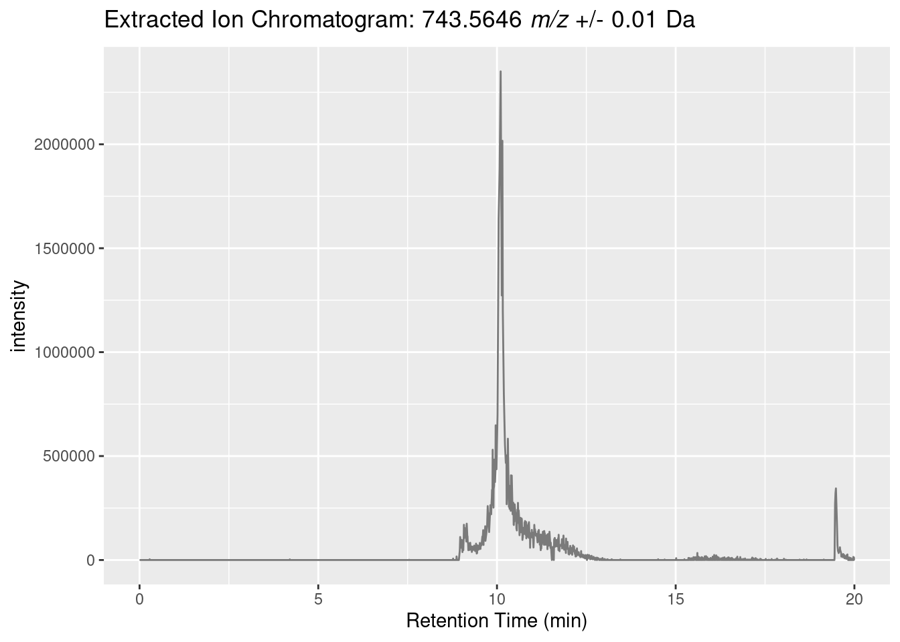

![]()
if (!require("mzR", quietly = TRUE))
install.packages("mzR")
if (!require("ggplot2", quietly = TRUE))
install.packages("ggplot2")
library(mzR)
library(ggplot2)The Experiment
Mass spectrometry has become an integral analytical technique in natural product discovery, both in measuring accurate mass for chemical formula determination, to analyzing molecule fragmentation for structure elucidation and library searches.
I won’t go in to too much detail here but there are some important experimental things to consider when approaching the analysis of mass spectrometry data.
For more info in the components below see this or similar.
The Instrument
Ionizer
There are a number of ionizers that are in use in modern mass spectreometers, the most common in outr field being electrospray ionization (ESI). The methods of ionization is important to consider because it will effect which molecules are ionized, how they are ionized, whether the molecules will remain largely intact or fragmented, and what types of adducts you might expect.
Analyzer
When you think of mass spectrometry you think of being able to differentiate molecules of different masses. Anlyzers are what provide the physical separation (or in the case of orbitraps seperation and measurement) of charged molecules within a mass spectreomter. There are a number of analyzers on the market, with the most popular being quadrupoles, ion traps, orbitraps, time-of-flight, and combinations thereof. The type of analyzer is important to consider in the analysis as well, and the following should be thought about when approaching a new analysis.
- What is the resolving power of the anlyzer(s)?
- Often analyzers will have their efficacy rated in FWHM (full width at half maximum) which is a measure of resolving power
- If you confuse resolving power with mass resolution you aren’t alone, there’s been much controversy over the years as they somewhat related. See this whitepaper by Agilent. Simply stated, resolving power measures how well you can separate two mass peaks in a spectrum and resolution is a measure of how “wide” your peaks are.
- What is the scan speed of your analyzer(s)?
- Some analyzers are veryt fast (ie they can analyze/separate many m/z per second), while others are slower. Some sacrifice sensitivity, accuracy, resolution, etc for higher scan speed. All things to be aware of.
Detector
While there are different detectors, this isn’t usually a concern during the analysis stage. However, if you notice things like sensitivity is too high or low it could be good feedback to give to the instrument operator as it could be detector settings (though likely sample concentration or ionization efficiency).
Another thing to note is that some instruments may have more than one detector and they may serve different purposes. For example, some Time-Of-Flight (TOF) instruments have both a “linear” detector and a “reflectron” detector that elongates the flight path allowing higher resolving power but with a lower m/z ceiling than the “linear” detector.
The Data
Raw data formats
Unfortunately different instrument vendors, and even different instruments within the same vendor, have their own unique data storage format. This is for a variety of reasons, the most convincing being that instruments have ever increasing speeds of ever-increasing data size and proprietary formats that allow faster/better read/write allow a competitive advantage.
Open-source data formats
Fortunately there are open standard formats available. You will proabably encounter mzXML and/or its nwer version, mzML; so if you have the option, choose mzML.
Some vendor software allows converting a file in proprietary data format to mzML, othwise your best bet is likely the program msconvert available as part of the ProteoWizard software library. Unfortunately some vendor formats can only be converted on a Windows computer, a limitation of vendors only providing Windows-based DLLs (so complain your vendor reps about this, not the the ProteoWizard team).
msconvert can be used from both a GUI or at the command line
For an example of how to use the command line see this zip of a directory that contains a batch file that converts a large number of files at once [https://ccms-ucsd.github.io/GNPSDocumentation/fileconversion/#data-conversion-easy]
I haven’t had the chance to try them but supposedly there are now some Docker containers that can successfully run msconvert. If you know how badly this was needed then you know how exciting this would be/is.
I will only cover mzML here as mzXML is similar enough and mzML/mzXML are by far the most commonly encountered in our field. Other formats can be seen at https://www.psidev.info/specifications; and MGF at http://www.matrixscience.com/help/data_file_help.html
mzML
So let’s peek at what an mzML file is… As is hinted by the earlier version (mzXML), it is an XML file, which is a highly-structured “markup language”. You can find the current specifications for the standard as well as example files over at https://www.psidev.info/mzml.
Take a second and look at an example mzml on HUPO-PSI’s GitHub repo.
The main things to notice are that it is highly structured.
For example:
<dataProcessing id="Xcalibur Processing" softwareRef="Xcalibur">
<processingMethod order="1">
<cvParam cvLabel="MS" accession="MS:1000033" name="deisotoping" value="false"/>
<cvParam cvLabel="MS" accession="MS:1000034" name="charge deconvolution" value="false"/>
<cvParam cvLabel="MS" accession="MS:1000035" name="peak picking" value="true"/>
</processingMethod>
</dataProcessing><dataProcessing id="Xcalibur Processing" softwareRef="Xcalibur">opens the “dataProcessing” tag and defines the properties of ‘id’ and ‘softwareRef’; the last line</dataProcessing>closes the “dataProcessing” tag.- Nested inside within the “dataProcessing” tag is the “processingMethod” tag which opens with
<processingMethod order="1">, and closes with</processingMethod>. - This contains a further nested tag “cvParam” which is different in that it self-closes with a
/>.
Usually mzML files are indented which allows you to easily discern which tags are nested under which other tags; but there is no requirement that mzML files have indentations.
Analyses with R
What’s a spectrum?
Let’s finally look at some data. We will use some data I acquired previously to make things easier… on me.
It’s from an LC-MS/MS run of a single Micromonospora extract, in a previously published study.
Experimental info
The sample is a Micromonospora extract. The extraction was performed from a bacterial culture growing on solid A1 agar media following the protocol of Bligh,E. G. and Dyer, W. J. (9). Agar cultures were divided into 1 cm3 pieces and 3 mm glass beads were added. Extraction solvent was added in three steps with vigorous vortexing between steps 1) 1:2 (v/v) CHCl3:MeOH, 2) CHCl3 in 1/3 the added volume of step one, 3) H2O in 1/3 the added volume of step one. From the resulting two-layer liquid partition, the organic layer was retained for further analysis.
The extract was analyzed via LC-MS/MS with a method adapted from that described by Goering et al. Experiments were performed on an Agilent 1200 workstation connected to a Thermo Fisher Scientific Q-Exactive mass spectrometer with an electrospray ionization source. Reversed-phase chromatography was performed by injection of 20 μL of 0.1 mg/mL of extract at a 0.3 mL/min flow rate across a Phenomenex Kinetex C18 RPLC column (150 mm x 2.1 mm i.d., 2 μm particle size). Mobile phase A was water with 0.1% formic acid and mobile phase B was acetonitrile with 0.1% formic acid. Mobile phase B was held at 15% for 1 minute, then adjusted to 95% over 12 minutes, where it was held for 2 minutes, and the system re-equilibrated for 5 minutes. The mass spectrometry parameters were as follows: scan range 200-2000 m/z, resolution 35,000, scan rate ~3.7 per second. Data were gathered in profile and the top 5 most intense peaks in each full spectrum were targeted for fragmentation that employed a collision energy setting of 25 eV for Higher-energy Collisional Dissociation (HCD) and isolation window of 2.0 m/z.
The mzXML file was created with ProteoWizard’s msconvert, using default settings.
Setup R session
Install and then load mzR, a Bioconductor package for parsing mass spectrometry data. Vignette here. For plotting I’ll use ggplot2.
Download example data
Next I’ll download the example file to a temporary directory (will be deleted upon closing the R session). Warning: This is a 22 MB and 306 MB download.
temporary_directory <- tempdir()
peaks_file_path <- file.path(temporary_directory, "B022.mzXML" )
download.file(url = "ftp://massive.ucsd.edu/v01/MSV000081555/peak/B022.mzXML",
destfile = peaks_file_path)
raw_mzml_path <- file.path(temporary_directory, "B022.mzML" )
download.file(url = "ftp://massive.ucsd.edu/v01/MSV000081555/raw/FullSpectra-mzML/B022_GenbankAccession-KY858245.mzML",
destfile = raw_mzml_path)Peek around
full_spectra_handle <- mzR::openMSfile(raw_mzml_path)header(full_spectra_handle)[2243, ]header(full_spectra_handle)[2243, ]$precursorMZ[1] 743.5622Reanalysis of strain B022, MS scan 2242 & 2243, C14 acyl-desferrioxamine
2242 is the MS1 scan that contains the precursor for the MS2 scan “2243” which appeared in Figure S6F.
single_spectrum <- mzR::peaks(full_spectra_handle, scans=2242)
single_spectrum <- as.data.frame(single_spectrum)
colnames(single_spectrum) <- c("mass", "intensity")nrow(single_spectrum)[1] 7076plot(
single_spectrum,
type = "l",
)
Let’s zoom in on the 13C isotopic envelope of the “743.5622 m/z” precursor.
ggplot(
data = subset(single_spectrum, mass > 743 & mass < 750),
aes(
x = mass,
y = intensity
)
) +
geom_line(color="gray48") +
geom_point(size = 0.75, color="gray0")
And zoom in further to the M+H ion.
ggplot(
data = subset(single_spectrum, mass > 743 & mass < 744),
aes(
x = mass,
y = intensity
)
) +
geom_line(color="gray48") +
geom_point(size = 0.75, color="gray0") 
An important thing to take note of when doing most types of spectroscopy/spectrometry is the number of measurements across a peak. Here we are getting ~10 data points per ion/peak which is pretty good. The smaller the number of points, the worse your peak shape will be, the worse your accuracy and precision will be. Alternately, too many points can bloat your data size and sometimes make analyses more difficult. This is largely controlled by dwell time and duty cycles in the MS acquisition settings. Instrument settings/chromatography may have to be optimized to balance sensitivity with getting enough data points.
ggplot(
data = subset(single_spectrum, mass > 743 & mass < 744),
aes(
x = mass,
y = intensity
)
) +
geom_line(color="gray48") +
geom_point(size = 0.75, color="gray0") +
geom_point(data = subset(subset(single_spectrum, mass > 743 & mass < 744), intensity > 100),aes(
x = mass,
y = intensity
), size = 3, color="red") 
Let’s create a extracted ion chromatogram (EIC) for the “743.5622 m/z” precursor.
To do that we need to loop through all the MS1 spectra
full_spectra_header <- header(full_spectra_handle)
ms1_indices <- full_spectra_header[full_spectra_header$msLevel == 1, ]$seqNum
target_mass <- 743.5646
delta <- 0.01
left_window <- target_mass - delta
right_window <- target_mass + delta
z <- lapply(ms1_indices,
function(x){
ret_time <- full_spectra_header[x, ]$retentionTime
x <- mzR::spectra(full_spectra_handle, x)
x <- as.data.frame(x)
colnames(x) <- c("mass", "intensity")
x <- x[x$mass > left_window & x$mass < right_window, ]
if (nrow(x) > 0){
return(data.frame(list(ret_time=ret_time, intensity=mean(x$intensity))))
} else {
return(data.frame(list(ret_time=ret_time, intensity=0)))
}
}
)
z2 <- do.call("rbind", z)Corresponds to Figure S5E:
title = paste(
"Extracted Ion Chromatogram: ",
target_mass,
" ",
expression(italic("m/z")),
" +/- ",
delta,
" Da")
ggplot(
data = z2,
aes(
x = ret_time / 60,
y = intensity
)
) +
geom_line(color="gray48") +
xlab("Retention Time (min)") +
ggtitle(bquote("Extracted Ion Chromatogram:"~.(target_mass) ~italic("m/z")~"+/-"~.(delta) ~"Da"))
Let’s highlight where the instrument fragmented parent ions between 743 m/z & 745 m/z?
ggplot(
data = z2,
aes(
x = ret_time / 60,
y = intensity
)
) +
geom_line(color="gray48") +
geom_point(
data = subset(full_spectra_header, precursorMZ > 743 & precursorMZ < 745),
aes(x=retentionTime / 60, y= 5e5),
color="red"
) +
xlab("Retention Time (min)")
Another consideration for the experimentalist (and good exam question 😛 ) is how you could obtain more scans of this 743.5622 m/z target ion. There’s multiple ways (the most obvious is to run in targeted mode where you only fragment parent molecules within a tight range around 743.5622 m/z), but if you need untargetted mode you can mess with duty cycles, or adjust your chromatography to increase the elution peak width of the target compound; sometimes 5min chromatography isn’t the best chromatography.
And we can see it is indeed an mzXML file.
cat(readLines(peaks_file_path, n=10), sep = "\n")<?xml version="1.0" encoding="ISO-8859-1"?>
<mzXML xmlns="http://sashimi.sourceforge.net/schema_revision/mzXML_3.2"
xmlns:xsi="http://www.w3.org/2001/XMLSchema-instance"
xsi:schemaLocation="http://sashimi.sourceforge.net/schema_revision/mzXML_3.2 http://sashimi.sourceforge.net/schema_revision/mzXML_3.2/mzXML_idx_3.2.xsd">
<msRun scanCount="4399" startTime="PT0.0673789S" endTime="PT1200.11S">
<parentFile fileName="file:///C:\Users\chase\Downloads\LCMSNORTHWESTERN\Example\Input_Folder/20170719_mwm1013_metabologenomics_actinolunaC182x100_B022.raw"
fileType="RAWData"
fileSha1="b739a75b1c680e889940f7b35fe9ef07ee5bcd62"/>
<msInstrument msInstrumentID="1">
<msManufacturer category="msManufacturer" value="Thermo Scientific"/>I really like mzR. Under the hood is a lot of fast C/C++ code, and it is possible to lazily load the data from mzML files.
Here we will tell mzR to lazily open the mass spec file we just downloaded. We can see it returns a handle to the file, which contains 4399 “scans”. A scan being a mass spectrum.
msfile_handle <- mzR::openMSfile(peaks_file_path)
msfile_handleMass Spectrometry file handle.
Filename: B022.mzXML
Number of scans: 4399 mzR uses S3 object oriented programming which is difficult if you are only used to R’s usual functional programming style. You don’t have to worry much about it because most of what I’ll show is functional, but if you do care there are a number of object based methods you can use.
We can see how mzR “opened/parsed” the file, here using C++ code from ProteoWizard.
msfile_handle@backendC++ object <0x55f35cb5f5d0> of class 'Pwiz' <0x55f35ac20450>These are the methods available to be run on files parsed with the Pwiz object (not all will be applicable to all types of MS data).
mzR:::PwizC++ class 'Pwiz' <0x55f35ac20450>
Constructors:
Pwiz()
docstring : Initialises a new Rccp pwiz object.
Fields: No public fields exposed by this class
Methods:
void close()
docstring : Close the connection to a mass spec file (mzXML, mzData, etc.).
void copyWriteMSfile(std::__cxx11::basic_string<char, std::char_traits<char>, std::allocator<char> >, std::__cxx11::basic_string<char, std::char_traits<char>, std::allocator<char> >, std::__cxx11::basic_string<char, std::char_traits<char>, std::allocator<char> >, Rcpp::DataFrame_Impl<Rcpp::PreserveStorage>, Rcpp::List, bool, Rcpp::List)
docstring : Copy general content from the originalting MS file, add the provided spectrum list and write the data to a new mzML file.
Rcpp::Matrix<14, Rcpp::PreserveStorage> get3DMap(std::vector<int, std::allocator<int> >, double, double, double)
docstring : Reads all scans and returns them as a matrix.
Rcpp::DataFrame_Impl<Rcpp::PreserveStorage> getAllChromatogramHeaderInfo()
docstring : Returns a data.frame with the header for all chromatograms
Rcpp::DataFrame_Impl<Rcpp::PreserveStorage> getAllScanHeaderInfo()
docstring : Reads the header info for all mass spectra.
Rcpp::DataFrame_Impl<Rcpp::PreserveStorage> getChromatogramHeaderInfo(Rcpp::IntegerVector)
docstring : Returns a data.frame with the chromatogram header information
Rcpp::DataFrame_Impl<Rcpp::PreserveStorage> getChromatogramsInfo(int)
docstring : Reads the chromatogram information.
std::__cxx11::basic_string<char, std::char_traits<char>, std::allocator<char> > getFilename()
docstring : Returns the mass spec filename.
Rcpp::List getInstrumentInfo()
docstring : Reads the instrument information from a pwiz object
int getLastChrom() const
docstring : Returns the index of the last chromatogram.
int getLastScan() const
docstring : Returns the last scan (not necessarily the number of scans because of missing scans).
Rcpp::List getPeakList(Rcpp::IntegerVector)
docstring : Performs a non-sequential parsing operation on an indexed mzXML file to obtain the peak list for a numbered scan.
std::__cxx11::basic_string<char, std::char_traits<char>, std::allocator<char> > getRunStartTimeStamp()
docstring : Returns the start time stamp of the MS run.
Rcpp::DataFrame_Impl<Rcpp::PreserveStorage> getScanHeaderInfo(Rcpp::IntegerVector)
docstring : Reads the header info for the specified scan(s). Supports also to extract scan header infos for multiple scans.
void open(std::__cxx11::basic_string<char, std::char_traits<char>, std::allocator<char> >)
docstring : Opens a mass spec file (mzXML, mzData, etc.) and creates a pwiz object
void writeSpectrumList(std::__cxx11::basic_string<char, std::char_traits<char>, std::allocator<char> >, std::__cxx11::basic_string<char, std::char_traits<char>, std::allocator<char> >, Rcpp::DataFrame_Impl<Rcpp::PreserveStorage>, Rcpp::List, bool, Rcpp::List)
docstring : Write the spectrum list to an mzML file.One of the most powerful {{mzR}} functions is header() which provides summarizing information about each scan in the dataset. Each scan is numbered sequentially (seqNum/acquisitionNum) and the msLevel (MS == 1; MS2 == 2, MS3 == 3, etc.)
summary_data <- header(msfile_handle)
head(summary_data)So, now we can do things like filtering for only positive mode MS2 scans.
filtered_df <- summary_data[summary_data$polarity == 1, ][summary_data$msLevel == 2, ]
head(filtered_df)The next useful function retrieves the actual mass spectra. It will load every scan in the file as a two-column separate matrix. For each matrix the first column represents m/z and the second column is intensity.
Let’s look at the first five lines of the twenty-second scan/mass spectrum.
# note: mzR::peaks() and mzR::spectra() are interchangeable
single_spectrum <- mzR::peaks(msfile_handle, scans=4)
head(single_spectrum, 5) [,1] [,2]
[1,] 150.0265 32913.336
[2,] 151.0238 2110.815
[3,] 151.0272 3636.793
[4,] 152.0564 4872.385
[5,] 153.0907 2387.040We can load just the filtered MS2
positive_ms2_header <- summary_data[summary_data$polarity == 1, ][summary_data$msLevel == 2, ]
positive_ms2_scan_index <- positive_ms2_header$seqNum
positive_ms2_spectra <- mzR::peaks(msfile_handle, positive_ms2_scan_index)Check that we only grabbed the positive, MS2 spectra
length(positive_ms2_spectra) == nrow(positive_ms2_header)[1] TRUEselected_scan <- 2243
spectrum_to_plot <- mzR::peaks(msfile_handle, selected_scan)
spectrum_df <- as.data.frame(spectrum_to_plot)
colnames(spectrum_df) <- c("m/z", "intensity")Let’s write a couple helper functions first.
# Fancy_scientific creates scientific notation text
fancy_scientific <- function(l) {
# "fancy_scientific" was copied from comment from Brian Diggs posted at https://groups.google.com/forum/#!topic/ggplot2/a_xhMoQyxZ4
# turn in to character string in scientific notation
l <- format(l, scientific = TRUE)
# quote the part before the exponent to keep all the digits
l <- gsub("^(.*)e", "'\\1'e", l)
# turn the 'e+' into plotmath format
l <- gsub("e", "%*%10^", l)
# return this as an expression
parse(text=l)
}
# gets top N intensity peaks
topn <- function(x, n=10) { x[order(x[, 2], decreasing = ifelse(all(x[, 2] < 0), F, T))[1:n], ] }
plot_peaks <- function(df1, plot_title){
ggplot() +
geom_bar(data = df1, aes(x = `m/z`, y = `intensity`), stat = "identity", width = 1) +
geom_text(data=topn(df1), aes(x = `m/z`, y = `intensity` * 1.05, label = as.numeric(sprintf('%.4f', `m/z`))), size = 3) +
scale_y_continuous(name="Intensity", labels = fancy_scientific) +
xlab(label = expression(italic("m/z"))) +
ggtitle(plot_title) +
theme(plot.title = element_text(hjust = 0.5))
}
plot_mirror <- function(df1, df2, plot_title, df1_name, df2_name){
df1$`intensity` <- df1$`intensity` / max(df1$`intensity`) * 100
df2$`intensity` <- df2$`intensity` / max(df2$`intensity`) * 100 * -1
df3 <- rbind.data.frame(
cbind.data.frame(df1, spectrum=df1_name),
cbind.data.frame(df2, spectrum=df2_name)
)
# ensure the input spectrum (positive spectrum) appears as the top label in the legend
df3$spectrum <- factor(df3$spectrum, levels=c(df1_name, df2_name))
ggplot() +
geom_bar(data = df3, aes(x = `m/z`, y = `intensity`, fill=`spectrum`), stat = "identity", width = 2) +
scale_fill_manual("legend", values = c( "blue", "red")) +
# write the m/z labels to 4 decimal places
geom_text(data=topn(df1), aes(x = `m/z`, y = `intensity` * 1.05, label = as.numeric(sprintf('%.4f', `m/z`))), size = 3) +
geom_text(data=topn(df2), aes(x = `m/z`, y = `intensity` * 1.05, label = as.numeric(sprintf('%.4f', `m/z`))), size = 3) +
scale_y_continuous(name="Intensity", labels = fancy_scientific) +
xlab(label = expression(italic("m/z"))) +
ggtitle(plot_title) +
theme(plot.title = element_text(hjust = 0.5))
}input_file_name <- basename(mzR::fileName(msfile_handle))
plot_title <- paste0("File: ", input_file_name, "; scan: ", selected_scan)
plot_peaks(spectrum_df, plot_title)Warning: `position_stack()` requires non-overlapping x intervals
gnps_spectrum_df <- read.delim("/home/chase/Downloads/CCMSLIB00000072054.mgf", sep="\t", skip = 3, header=FALSE, nrows = 500)
gnps_spectrum_df <- as.data.frame(gnps_spectrum_df)
colnames(gnps_spectrum_df) <- c("m/z", "intensity")
plot_title <- "GNPS Library: CCMSLIB00000072054"
plot_peaks(gnps_spectrum_df, plot_title)Warning: `position_stack()` requires non-overlapping x intervals
plot_mirror(
df1 = spectrum_df,
df2 = gnps_spectrum_df,
df1_name = "input",
df2_name = "CCMSLIB00000072054",
plot_title = "Comparison to GNPS Reference")Warning: `position_stack()` requires non-overlapping x intervals
`position_stack()` requires non-overlapping x intervals